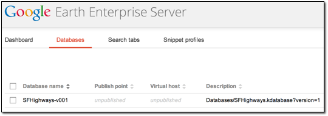

Google Earth Enterprise Documentation Home | Fusion administration
Push and publish databases
Pushing a database is the process of making a Google Earth Enterprise Fusion database available on a Google Earth Enterprise Server so that it can then be published for viewing with Google Earth EC.
The push operation copies all the necessary files associated with a given 2D/3D Fusion database version to Google Earth Enterprise Server and registers the database. Pushing is performed from Fusion.
The publish operation makes a previously pushed database available for serving at a specified publish point. Publishing is performed on Google Earth Enterprise Server.
Along with the GUI of both Fusion and GEE Server, you have the option of using the command line to push and publish databases.
Push Databases
After you define and build your database
To push a database:
- Select Asset Manager from the Tools menu. The Asset Manager appears.
- Navigate to the database that you want to publish.
- Right-click the name of the database, and select Push from the context menu.
If the Push option is not available, it may be because the database is still building.
- The Push Database dialog appears.

Select the server that you want to publish to from the Server Associations drop-down list. The most recent version of the selected database is the default selection on the Version drop-down list.
- Click Push. Google Earth Enterprise Fusion pushes the database to Google Earth Enterprise Server, and displays a success message when it is done.
Publish databases
After you push your database to Google Earth Enterprise Server, you publish it in the GEE Server Admin console. You can then view your published databases with Google Earth EC or the Google Earth plugin (deprecated) for 3D databases or with the Google Maps API for 2D databases.
To publish a database:
- Access the Google Earth Enterprise Server Admin console in a browser window by going to myserver.mydomainname.com/admin, replacing myserver and mydomainname with your server and domain.
- Sign in with the default credentials or the username and password assigned to you:
- Default username: geapacheuser
- Default password: geeadmin
If you do not know your username and password, contact your Google Earth Enterprise Server System Administrator. - Click Databases to display the list of databases pushed to GEE Server.
The list of databases appears alphabetically. Reverse the order by clicking the arrows at the top of the list:

Your most recently pushed database is added to the list.

The Databases page displays ten pushed databases per page so you may need to click the right arrow in the top-right corner of the window to see the next page of databases if your database is added to a longer list. To manage your list of databases, especially if you have multiple versions of the same database, you may want to remove unwanted versions by selecting the checkbox next to the database you want to remove and then click Remove. Note that this action removes the database from GEE Server and does not delete the database. - Check the box next to your pushed database. The Publish button appears.

- Specify a Publish point, which is where you access the database or portable. For example, if you specify sanfrancisco, it will be accessible from myserver.mydomainname.com/sanfrancisco.
- Specify the following options:
- POI Search (Fusion databases with search data only)
- Search Tabs (Fusion databases only)
- Snippet profile (Fusion 3D databases only)
- Select a Virtual host.
- Optionally enable Serve WMS.
- Click Publish. The Databases page updates to indicate the published status of your database.
Unpublish databases
If you no longer want to make a database available for serving on GEE Server, you can unpublish it and then remove it. If you want to publish it to a different server, or apply different settings, such as a secure virtual host, a search plug-in or a snippet profile, simply unpublish your database and republish using the new settings you want.
To unpublish a published database:
- Access the Google Earth Enterprise Server Admin console in a browser window by going to myserver.mydomainname.com/admin, replacing myserver and mydomainname with your server and domain.
- Sign in with the default credentials or the username and password assigned to you:
- Default username: geapacheuser
- Default password: geeadmin
If you do not know your username and password, contact your Google Earth Enterprise Server System Administrator. - Click Databases to display the list of databases pushed to GEE Server.
- Check the box next to the database that you want to unpublish. The Unpublish button appears above the list of databases.
- Click Unpublish to unpublish a database from its publish point.
You can now either remove the database, which is to unpush an unpublished database, or you can republish to a different publish point using a different virtual host, for example.
To remove an unpublished database from GEE Server:
- From the Databases page of GEE Server, check the box next to the database that you want to remove. The Remove button appears above the list of databases.
- Click Remove to remove the database from GEE Server.
Removing a database does not delete it. Remove reverses the push process so that the database is no longer pushed to GEE Server.
- The checked database is removed from the list.
To restore the removed database, push it again from Fusion. See Push databases.
Learn more
- Create Search tabs
- Manage snippet profiles
- Manage virtual hosts
- Make Web Map Service (WMS) requests
- Google Earth EC
Publish using the command line
The procedure to publish a database using the command line requires you to add, push, then publish a database. You must specify a target path and may optionally specify a virtual host to publish to. Before you begin, you may need to identify the virtual hosts registered on your default or designated stream server, and you’ll need to identify the full path and name of the database to publish.
To publish a database using the command line:
- Query GEE Server for virtual stream servers and write down which virtual server you want to publish to. You can skip this step if you are using default servers only.
geserveradmin --stream_server_url http://myserver.org --server_type stream --listvhs - Get the full folder path for the database to publish:
gequery --outfiles Databases/NameOf3DDatabase.kdatabasefor 3DFor 3D databases, look for the path ending in
gedb.gequery --outfiles Databases/Nameof2DDatabase.kmmdatabasefor 2DFor 2D databases, look for the path ending in
mapdb. - Add the database to register it with GEE Server. In this example, we publish a 2D database, using the full folder path as discovered in the previous steps. You use
geserveradmin --adddb db_nameto register the database.geserveradmin --stream_server_url http://myserver.org --adddb /gevol/assets/Databases/Nameof2DDatabase.kmmdatabase/mapdb.kda/ver001/mapdb/ - Push the database to GEE Server using
geserveradmin --pushdb db_name. For example:geserveradmin --stream_server_url http://myserver.org --pushdb /gevol/assets/Databases/Name of 2DDatabase.kmmdatabase/mapdb.kda/ver001/mapdb/ - Publish the database to GEE Server using
geserveradmin --publishdb db_name --targetpath target_path. For example:geserveradmin --publishdb /gevol/assets/Databases/SFMapDatabase.kmmdatabase/mapdb.kda/ver001/mapdb/ --targetpath http://myserver.org - Publish the database to GEE Server, specifying it as the default globe for GEEC, using
geserveradmin --publishdb db_name --targetpath target_path --setecdefault. For example:geserveradmin --publishdb /gevol/assets/Databases/SFMapDatabase.kmmdatabase/mapdb.kda/ver001/mapdb/ --targetpath http://myserver.org --setecdefault
For more information about the geserveradmin command options, see the Command Reference.